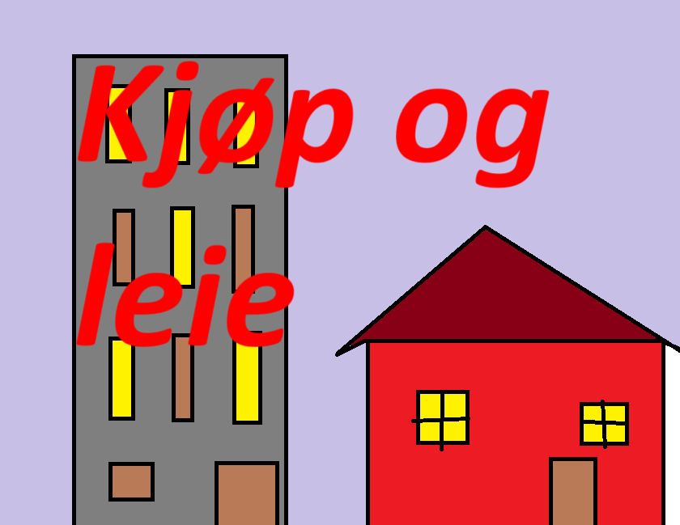

Da er det oftest en forening som må se til at bygget og de enhver bostad er godt stand. Vis det er feil på tak og vegger er det de som betaler. Men ikke se blindt bort fra hvordan den passes på. Det er fortsatt du som leietaker/kjøper som betaler penger dit hver måned. Er bygget i dårlig stand og svære oppussinger/renovasjoner trengs kan den månedlige kosten gå opp.
Er det et hus du vurderer at flytte til anbefales at se over konstruksjonen at det er god ventilasjon og drenering fungerer fint. Konstruksjonen burde ikke ligge rett på bakken. Nå ligger nesten hele byen på fjell, marken luter godt på det fleste plasser. De fleste husene er derfor bygget på en grunde så det står rett opp. Oftest er ikke den ett problem, hvilket også er godt i for at vann ikke samles under huset. Å være bevisst på valg av ferge og tid at måle fasaden på huset er lit lurt. Så du slipper gjøre de om for fargen ikke er tåler vann ellers fordi den ikke tørket helt før regnet kommet. Beste er å sjekke værrapport før du begynner å måle og spør i butikk før den rette fargen før deg.
|  |  |
 |